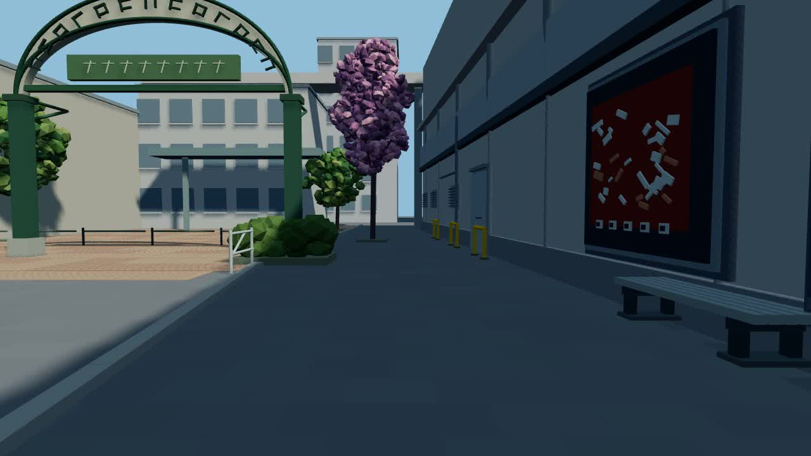
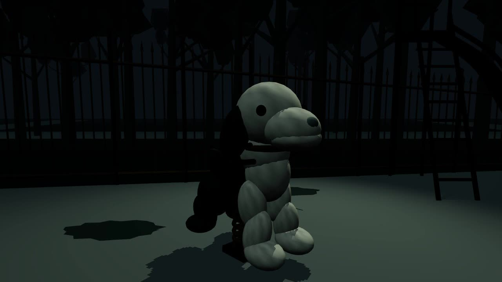

case_0012 · nav_straight · COMPOSITION FAIL
OPENING_LOCK mae=0.7770 · horizon_official=0.511 / horizon_opening=0.203 · Δ=0.308



NAS: /fsx/pipeline/world500-standalone/xuxiake/orbia-720-20261028/lane1/cases/case_0012/motion-16fps.mp4
| case | lane/pod | mode | RECORD | OPENING_LOCK | COMPOSITION | notes |
|---|---|---|---|---|---|---|
| case_0012 | lane1 / orb-1 | nav_straight | OK | PASS mae=0.78 | FAIL | horizon_delta=0.308>0.06；需修 camera/opening 后重门禁+重录 |
| case_0003 | lane2 / orb-2 | nav_strafe | OK | PASS mae=1.60 | PASS | demo 100帧；非金标长度 |
| case_0014 | lane3 / orb-3 | look_yaw | OK | PASS mae=0.49 | PASS | demo 100帧；非金标长度 |
OPENING_LOCK mae=0.7770 · horizon_official=0.511 / horizon_opening=0.203 · Δ=0.308

NAS: /fsx/pipeline/world500-standalone/xuxiake/orbia-720-20261028/lane1/cases/case_0012/motion-16fps.mp4
OPENING_LOCK mae=1.6008 · horizon_delta=0.0028 · COMPOSITION within_thresholds


NAS: /fsx/pipeline/world500-standalone/xuxiake/orbia-720-20261028/lane2/cases/case_0003/motion-16fps.mp4
OPENING_LOCK mae=0.4867 · horizon_delta=0.0 · COMPOSITION within_thresholds



NAS: /fsx/pipeline/world500-standalone/xuxiake/orbia-720-20261028/lane3/cases/case_0014/motion-16fps.mp4